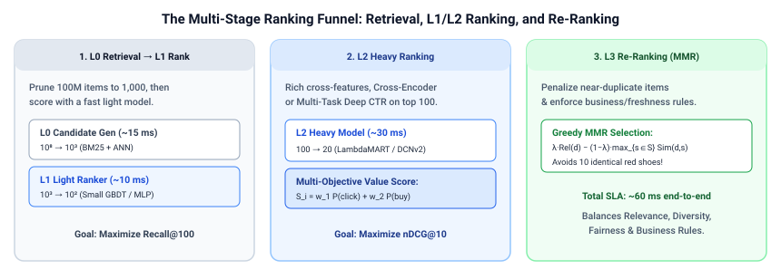

Search, Ranking & Retrieval · Learning to Rank & Multi-Stage Cascade · Chapter 1
1. The Multi-Stage Ranking Cascade: Candidate Generation, L1/L2 Ranking & Re-Ranking
No single model can score $100{,}000{,}000$ items with rich cross-features inside a $60\text{ ms}$ p99 latency budget. Every large-scale search engine and recommender system (Google Search, YouTube, Amazon, Pinterest, LinkedIn) solves this compute-vs.-quality tradeoff using a four-stage ranking funnel: L0 Candidate Generation ($10^8 \to 10^3$), L1 Light Ranking ($10^3 \to 10^2$), L2 Heavy Ranking ($10^2 \to 20$), and L3 Re-Ranking & Diversity ($20 \to 10$).

1. Anatomy of the Four-Stage Funnel
Suppose our total end-to-end latency budget is $T_{\text{total}} = 65\text{ ms}$. If stage $s$ scores $N_s$ candidates within stage budget $T_s$, the maximum compute per candidate is $c_s = T_s / N_s$:
| Stage | Input $\to$ Output Size | Latency Budget | Per-Item Compute | Model Family & Features | Primary Metric |
|---|---|---|---|---|---|
| L0: Retrieval | $10^8 \to 1{,}000$ | $\sim 15\text{ ms}$ | Sub-$\mu\text{s}$ (index) | BM25/WAND + Two-Tower HNSW | Recall@1000 |
| L1: Pre-Ranking | $1{,}000 \to 100$ | $\sim 10\text{ ms}$ | $0.01\text{ ms}$ / item | Small GBDT (50 trees) or distilled MLP; cached static features | Recall@100 |
| L2: Heavy Ranking | $100 \to 20$ | $\sim 30\text{ ms}$ | $0.30\text{ ms}$ / item | 500-tree LambdaMART, Cross-Encoder, or DCN-v2 + real-time user history | nDCG@10, AUC |
| L3: Re-Ranking | $20 \to 10$ | $\sim 5\text{ ms}$ | List-level | Maximal Marginal Relevance (MMR), DPP, freshness & business rules | Diversity, OEC |
2. Multi-Objective Value Scoring in L2 Ranking
In e-commerce search or feed ranking, L2 does not predict a single relevance label. Instead, it predicts calibrated probabilities for multiple user actions—such as click $\hat{p}_{\text{click}}$, add-to-cart $\hat{p}_{\text{cart}}$, purchase $\hat{p}_{\text{buy}}$, and negative hide/bounce $\hat{p}_{\text{bounce}}$—and combines them into a unified business value score:
$$S_{\text{L2}}(q, d) = w_{\text{click}}\, \hat{p}_{\text{click}} + w_{\text{cart}}\, \hat{p}_{\text{cart}} + w_{\text{buy}}\, \hat{p}_{\text{buy}} \cdot \ln(1 + \text{Price}_d) - w_{\text{bounce}}\, \hat{p}_{\text{bounce}}$$Because L2 only evaluates $100$ items per request, it can afford expensive real-time features fetched from a feature store (e.g., user-brand affinity over the last 30 minutes, exact query-title Cross-Encoder score, and live inventory status).
3. L3 Re-Ranking: Maximal Marginal Relevance (MMR)
Pointwise L2 scores evaluate each item in isolation. If the user searches for "running shoes" and the top 10 highest-scoring items in L2 are 10 slightly different sizes/colorways of the exact same Nike Pegasus shoe, showing all 10 wastes screen real estate and hurts conversion if the user dislikes that specific shoe.
Maximal Marginal Relevance (MMR) (Carbonell & Goldstein, 1998) builds the final display list $S$ greedily one slot at a time. Given the set of already-selected items $S$ and remaining candidates $R \setminus S$, MMR picks the item that maximizes a trade-off between relevance $\text{Rel}(d)$ and novelty (penalizing similarity $\text{Sim}(d, s)$ to the closest item already placed in $S$):
$$d^* = \arg\max_{d \in R \setminus S} \left[ \lambda \cdot \text{Rel}(d) - (1 - \lambda) \cdot \max_{s \in S} \text{Sim}(d, s) \right]$$Here $\lambda \in [0, 1]$ controls the relevance-diversity trade-off ($\lambda = 1$ recovers pure L2 ordering; $\lambda = 0.7$ strongly suppresses near-duplicates).
4. Worked Numerical Example: Greedy MMR Diversification
Suppose L2 returns $4$ items for the query "wireless headphones" with relevance scores $\text{Rel}(d) \in [0, 1]$, and we want to pick the top $3$ items using MMR with $\lambda = 0.7$:
- Item A (Sony WH-1000XM5 Black): $\text{Rel}(A) = 0.95$
- Item B (Sony WH-1000XM5 Silver — near-duplicate of A): $\text{Rel}(B) = 0.92$, $\text{Sim}(B, A) = 0.95$
- Item C (Bose QuietComfort Ultra): $\text{Rel}(C) = 0.88$, $\text{Sim}(C, A) = 0.30$
- Item D (Apple AirPods Max): $\text{Rel}(D) = 0.85$, $\text{Sim}(D, A) = 0.25$, $\text{Sim}(D, C) = 0.35$
Slot 1 ($S = \emptyset$): Pick highest relevance $\Rightarrow$ Item A ($0.95$). Now $S = \{A\}$.
Slot 2 ($S = \{A\}$) and Slot 3 ($S = \{A, C\}$):
| Candidate $d$ | Relevance $\text{Rel}(d)$ | $\max_{s \in \{A\}} \text{Sim}(d, s)$ | Slot 2 MMR Score ($\lambda = 0.7$) | $\max_{s \in \{A, C\}} \text{Sim}(d, s)$ | Slot 3 MMR Score |
|---|---|---|---|---|---|
| Item B (Sony Silver) | $0.92$ | $\mathbf{0.95}$ (dup of A) | $0.7(0.92) - 0.3(0.95) = \mathbf{0.359}$ | $0.95$ | $0.359$ |
| Item C (Bose QC) | $0.88$ | $0.30$ | $0.7(0.88) - 0.3(0.30) = \mathbf{0.526}$ (Slot 2!) | (Already in $S$) | — |
| Item D (AirPods Max) | $0.85$ | $0.25$ | $0.7(0.85) - 0.3(0.25) = \mathbf{0.520}$ | $\max(0.25, 0.35) = 0.35$ | $0.7(0.85) - 0.3(0.35) = \mathbf{0.490}$ (Slot 3!) |
Pure L2 ranking would have shown $[\text{Sony Black},\; \text{Sony Silver},\; \text{Bose}]$. MMR detects that Sony Silver has $0.95$ similarity to Sony Black, penalizes its marginal utility down to $0.359$, and returns the diverse trio $[\text{Sony Black},\; \text{Bose QC},\; \text{AirPods Max}]$.
5. Minimal Python Implementation of MMR Re-Ranking
import numpy as np
def mmr_rerank(
doc_ids: list[str],
relevances: np.ndarray, # [N] L2 relevance scores
embeddings: np.ndarray, # [N, d] L2-normalized item embeddings
top_k: int = 3,
lmbda: float = 0.7,
) -> list[tuple[str, float]]:
sim_matrix = embeddings @ embeddings.T # [N, N] pairwise cosine similarities
selected: list[int] = []
remaining = set(range(len(doc_ids)))
result: list[tuple[str, float]] = []
while len(selected) < top_k and remaining:
best_idx, best_score = -1, -1e9
for i in remaining:
if not selected:
score = lmbda * float(relevances[i])
else:
max_sim = float(np.max(sim_matrix[i, selected]))
score = lmbda * float(relevances[i]) - (1.0 - lmbda) * max_sim
if score > best_score:
best_idx, best_score = i, score
selected.append(best_idx)
remaining.remove(best_idx)
result.append((doc_ids[best_idx], round(best_score, 4)))
return result
# Verify worked example
ids = ["Sony_Black", "Sony_Silver", "Bose_QC", "AirPods_Max"]
rels = np.array([0.95, 0.92, 0.88, 0.85])
# Construct embeddings matching similarity structure
embs = np.array([
[1.0, 0.0, 0.0],
[0.95, 0.312, 0.0],
[0.30, 0.954, 0.0],
[0.25, 0.288, 0.924],
])
print("MMR Top-3:", mmr_rerank(ids, rels, embs, top_k=3, lmbda=0.7))